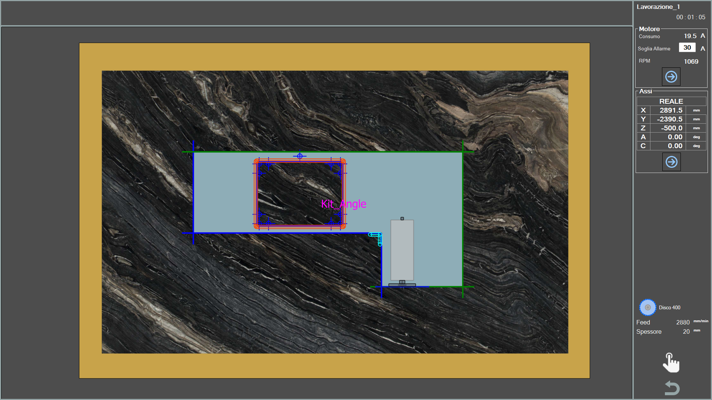
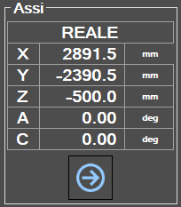
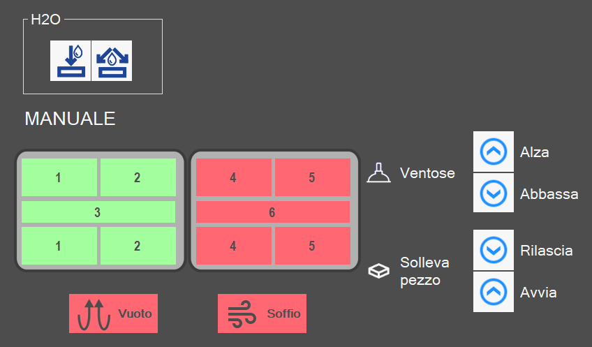

Questa schermata permette di monitorare in tempo reale lo svolgimento del programma ISO che la macchina sta eseguendo.

Anteprima
Nella sezione centrale della schermata viene mostrato il movimento della macchina in tempo reale sull’area di lavoro.
I tagli del pezzo che sono già stati eseguiti, vengono colorati di verde, mentre quelli ancora da svolgere mantengono il loro colore originale.
 | Nome lavorazione e tempo impiegato |
Motore
In questa sezione si possono visualizzare alcune informazioni relative ai motori della macchina.

Motore | Motore del mandrino principale. |
Motore esterno | Motore del Tool Plus, se presente. |
È possibile cambiare scheda informativa con i pulsanti sottostanti.
Pannello informativo precedente/successivo |
Di ciascun motore, viene mostrato:
Consumo | Indica la corrente assorbita dal motore. |
Soglia allarme | Indica la soglia di Ampere oltre la quale viene attivato l’allarme e bloccata la rotazione del motore. |
RPM | Indica il numero di giri del motore al minuto. |
Assi
In questa sezione vengono mostrate delle informazioni riguardo agli assi della macchina.

Reale | Vengono visualizzate le coordinate istantanee relative alla posizione e all’orientamento degli assi della macchina. |
Distanza da raggiungere | Vengono riportate le distanze di ciascun asse dalle coordinate in cui termina il taglio. |
Consumo | Viene riportato il consumo di corrente elettrica del motore di ogni asse. |
Utensile
In questa sezione vengono mostrati dati relativi all’utensile utilizzato per il taglio in corso attualmente.

Nome | Vengono riportate tipologia e nome dell’utensile utilizzato durante la lavorazione. |
Feed | Velocità di movimento della macchina lungo la direzione di spostamento. |
Spessore | Penetrazione del taglio che sta venendo eseguito sulla lastra. |
Comandi manuali
In caso di problemi durante l’esecuzione della lavorazione, è possibile controllare alcune funzioni della macchina utilizzando dei comandi manuali.
Comandi manuali |

Acqua
Accensione / Spegnimento acqua interna | |
 | Accensione / Spegnimento acqua |
Ventose
 | Abilitazione / disabilitazione ventose |
 | VENTOSE: ALZA - Parcheggio ventose |
 | VENTOSE: ABBASSA - Predisponi ventose |
 | SOLLEVA PEZZO: RILASCIA - Scaricamento pezzo |
 | SOLLEVA PEZZO: AVVIA - Sollevamento pezzo |
  | SOFFIO - Comando soffio |
  | VUOTO - Comando pompa del vuoto |